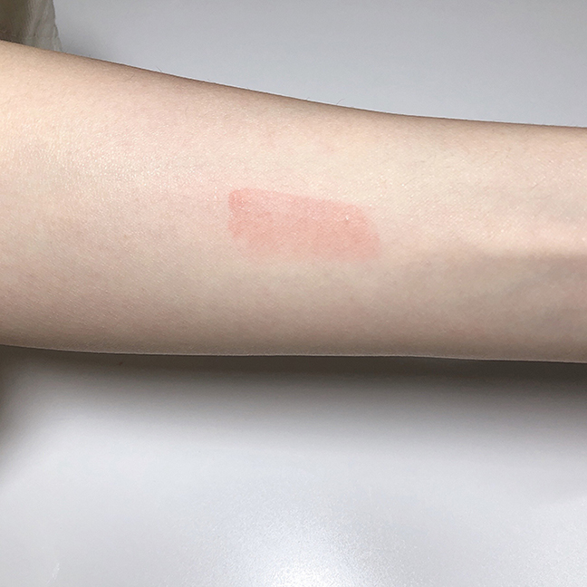

어김없이 돌아온 새 학기, 이번에는 무언가 새로운 변화를 주고 싶다.
촉촉하고 광택 있는 입술.. 근래 들어 왜 이렇게 매력적으로 보이는지.
이제는 외면해왔던 소리치는 나의 입술 각질들의 소리를 들어줄 때!
몇 년 동안 고집하던 매트한 립 제품을 내려놓고 촉촉광택 립 제품에 도전해보기로 한다!
롬앤 GLASTING WATER TINT 촉촉,광택 틴트로 괜찮다고?
4g, 13000원
무작정 가서 사지는 않는다. 대략 만 오천원 상당의 나의 귀한 돈을 허투루 날리지 않기 위해서 리뷰 검색은 필수다. 그렇게 내 레이더망에 걸린 ‘롬앤 glasting water tint’, 일명 유리광택틴트. 성공적인 구매가 될 지 모르겠지만! 바로 구매하러 가보자!
*비슷한 촉촉,광택 틴트 정보는 글 하단 참고
출처 | 위메프
Six Color
나의 픽은 #01 coral mist!
코랄미스트, 실제 느낌은 쨍하지 않은 토마토레드 색상이랄까?
웜,쿨 안가릴 듯한 색상이지만 웜톤에게 조금 더 잘 어울릴 것 같은 느낌이다.
일명 '물막, 유리광택 틴트'
바르는 순간 컬러는 착색, 3초후 물막광택이 스르르!
라고 광고하고 있다.
바르고 난 후 서서히 물막이 차오르는 것 같다해서 물막 틴트라 불리는데, 먼저 손목에 테스트해본다. 이름에 맞게 물막과 같은 광택이 느껴진다.
젤 제형으로 촉촉하게 발려 입술 주름부각이나 각질 부각은 매우 적은 편이었다. 그러나 젤 제형상 워터 틴트보다 두껍게 올라간다.
얇게 발린다고 광고하지만 얇게 발리는지는 살짝 의문이? 얇게 발리는 느낌을 특히나 좋아한다면 테스트 후 구매하자!
처음 컬러 그대로, 의외로 강한 착색력!
촉촉한 립제품의 보편적인 단점, 잘 지워지고 착색력이 약하다.
glasting water tint의 착색력을 확인하기 위해 손목발색 후, 5분 후 물티슈로 지워보았다.
문지르지 않고 한 번 닦아냈을 때 광택만 사라지고 색은 남아있었다.
여러번 닦아냈을 때도 색이 남아있었다.

이제는 국룰, NO!기승전 핑크!
이제는 국룰과 같은 것, “착색은 처음 컬러 그대로!”
#Tip1 뭉치지 않으려면! 얇게 여러번 바르자
솔에 묻은 양을 그대로 발랐더니 입술 안쪽에 뭉치는 현상이 발생했다.
촉촉한 젤 제형은 그 특성 상 이리저리 밀리기 때문에 양 조절이 중요하다.
솔에 묻은 양을 덜고 얇게, 여러번 바르자!
#Tip2 탱글탱글 광택이 부담스럽다면?
평소 안쓰던 광택있는 립 제품을 사용하면 그 광택이 다소 부담스러울 수 있다.
입술만 동동 뜬 느낌이랄까.
자연스러운 광택을 원한다면 매트한 립 제품을 베이스로 바르고 그 위에 광택있는 립제품을 소량만 발라보자. 자연스러운 은은한 광을 느낄 수 있다.
#Tip3 펄 있는 섀도우로 전체적인 조화를!
무엇이든 통일감은 중요하다!
탱글탱글 광택은 마음에 드는데 어딘가 입술만 동동 떠보이는 느낌이라면?
펄 있는 섀도우로 전체적인 조화를 이뤄보자!
광택있는 입술과 눈 위 펄의 조화가 전 보다 자연스러워보인다. (필수 과정은 아니지만 살짝 추천해본다.)
특별한 날, 조금은 화려하고 싶다면, 굵은 펄을 올려보자!
망설이고 있다면 한 번 써봐도 괜찮아
안어울린다고 생각해 그 동안 사용하지 못했던 광택있는 립 제품.
안어울려보이는 것도 어울리게 만들 수 있는 방법이 있다!
# 베이스는 매트로 # 펄 섀도우와 함께
가끔은 기분전환으로 새로운 것을 시도해봐도 괜찮다.
비슷한 자사 제품 비교
기존 쥬시 래스팅 틴트와 다른 점은?
쥬시 래스팅 틴트는 제형 자체에 광이 올라와 도톰한 느낌의 광택감을 가졌으나 글래스팅 워터 틴트는 착색 컬러와 분리되어 투명한 느낌의 물막 광택감을 보여준다.
탱글탱글함 ) 글래스팅<쥬시래스팅
발리는 두께 ) 글래스팅 < 쥬시래스팅
착색 ) 글래스팅 > 쥬시래스팅